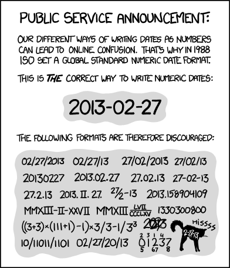

2. Primary Practices#
This chapter covers primary practices for reproducibility. At DataLab, we adopt these practices for every project, and we recommend that you do too. They’ll ensure that you can work on projects efficiently, without being slowed down by trying to remember what you did last week, find that one file with the code that actually works, or reorganizing your project so that it isn’t embarrassing to share with a collaborator.
Of the five reproducibility principles introduced in Chapter 1, only four appear here: documentation, artifact preservation, project organization, and workflow automation. The first three of these are the most critical principles. Neglecting them can make your projects impenetrable to other people—and in some cases, even to future you. The subsequent chapters will address the remaining principle: environment management.
For all of the practices listed in this chapter, the benefits far outweigh the costs. Most of them are practices you can adopt immediately, with minimal training. Eventually, they become good habits that you don’t even have to think about. There are two practices listed here—version control (Section 2.3.2) and computing with code (Section 3.5.1)—that do require substantial effort to learn and use. However, they provide benefits for reproducibility, collaboration, and distribution that we consider well worth the cost.
2.1. Documentation#
Writing is a primary mechanism for doing research, not just for reporting it.
– paraphrased from Simon Peyton Jones, computer scientist
2.1.1. Start with the Scope#
At the beginning of a project, write a scope document or research proposal to lay out the research question and goals. The funding mechanisms in your discipline may require this, but even if they don’t, it’s a excellent way to clarify what you’re trying to achieve and can help you identify potential problems or gaps in reasoning early. The scope document will help you stay focused and organized as you work. Later on, it can help you and your collaborators understand the history of the project.
This is also a good time to establish a timeline with milestones you’d like to reach. The milestones should be specific, measurable, and concrete, so that you can easily tell when you’ve completed one. Be generous with yourself and your collaborators: it can be hard to predict the directions research will take you, and tasks that seem short (especially programming tasks) can end up taking longer than expected. It’s almost always better to finish things earlier than planned rather than later.
For projects which involve data analysis, investigate potential data sources. Sometimes a data set can sound promising, but lack the features you need, have too few observations, or have too much missing data. If you’ll collect the data yourself, make a plan for data collection. You should have a clear picture of which data sets will be available at the analysis stage and how they will be structured. Pay particular attention to whether there are any biases, ethical concerns, privacy concerns, licensing fees, or other issues.
Tip
If you use spreadsheet software like Microsoft Excel or Google Sheets to collect or analyze data, check out DataLab’s Excelling with Excel workshop reader to learn how to keep your data neat and tidy.
To level-up your reproducibility, consider using a programming language like R or Python to analyze data instead. Analyses you carry out in a spreadsheet can be difficult for others to reproduce unless you meticulously document every step. When you write code, anyone you share that code with can repeat your steps.
If you need to store a lot of data, especially many different closely related tables, consider using a database to store the data.
2.1.2. Keep a Research Log#
You’re part of a lab working on a research project that began three years ago. When you were introducing a new graduate student to the project this morning, they asked whether the lab considered investigating treatment Z, because they’ve seen lots of excitement about it in recent literature. You remember mentioning treatment Z to the principal investigator a few years ago and eventually deciding not to pursue it, but can’t remember when or why you made that decision. Now you’re wondering whether your decision was too hasty and reviewers will question why treatment Z wasn’t considered. If only you had detailed notes to refresh your memory as to why treatment Z isn’t relevant.
A research log is a collection of running notes about your progress on your research project. You can set up one or more notes documents when you set up your project. Use the notes to keep track of things you’ve tried, things you want to try, decisions, relevant references, and more. If you have collaborators, take notes about your meetings. Record anything there’s a chance you’ll want to remember later: results (positive or negative), new ideas, new leads, decisions, changes of plan, action items, and scheduling details.
When you start a notes document, make sure to consider whether you’ll need to include figures, code, or other media, and choose an appropriate format. Paper notes are convenient for diagramming and doodling, and can be digitized after the fact to share with the team. Digital notes are convenient for collaborating with team members who aren’t physically present, and can be shared as they are being written.
For Collaboration
Put some thought into what note-taking methods work best for everyone engaged with the project. It’s good to share notes with the entire team, so that everyone can contribute and misunderstandings can be corrected quickly, unless your research topic or data require restricting access.
Take notes during meetings. Some people like to take notes during meetings, while others prefer to take summary notes immediately after, so that they can be fully engaged. Collaborating on notes or rotating who takes notes in each meeting can help lessen the burden, but having a designated note-taker can help ensure consistency.
One way to keep your notes digitally is to use electronic lab notebook (ELN) software, which provide a searchable interface for entering notes. Most ELNs automatically capture metadata about notes, such as the date and time they were written, and can also store experimental data. Some also have other features, such as file storage and sharing, version control, and publishing tools. Depending on your discipline and research topic, you might be expected or required to use a specific ELN system.
See also
See the Electronic Lab Notebooks section of the UC Davis Library’s Research Data Management guide to learn more about ELNs.
Another way to keep notes digitally is to use issue tracking software. Issue tracking software were originally created to keep track of and help organize work to be done, or “issues”, in (large) software development projects. However, most work equally well for keeping track of work in computational research projects. Services such as GitHub, GitLab, and Tangled provide issue tracking.
See also
See the Working with GitHub section of DataLab’s Git for Teams workshop reader to learn more about issue tracking.
2.1.2.1. Document Every Experiment#
Note
An “experiment” doesn’t necessarily have to be an experiment done in a lab. Doing an experiment could mean running a simulation, testing a model, or something else.
In your notes, keep a record of every experiment that you do. Document parameters, the results, and anything else you think is relevant for:
Repeating experiments in the future. Research projects are often iterative—you may need to repeat an experiment to make adjustments to a few parameters or because you discovered a bug in your code.
Comparing across experiments. Think of the documentation as a high-level overview of your project. Use it to get a sense of which experiments had promising results, which didn’t, and which you might want to try next.
Avoiding redundant work. By keeping track of what’s already been done, you can avoid accidentally and unnecessarily repeating an experiment that you or your collaborators have already done.
Get in the habit of recording experiments as soon as you start to plan them, and recording the results as soon as they finish. Assign a unique name or number to each experiment so that you can reference specific experiments in your other notes and files. If you have collaborators, make sure they can access the documentation and understand how to use it.
Tip
ELNs or spreadsheets are often a good format for this kind of documentation, since they’re convenient for data entry.
2.1.3. Write READMEs#
A README is a document that introduces and explains a project or directory
within a project. READMEs should generally be plain-text (.txt) or Markdown
(.md) files, because these are non-proprietary formats accessible to anyone
with a text editor. READMEs help people—including future you—find and use
your project.
Tip
Each time you start a new project, create a new directory for the project. Use this project directory to store all files related to the project. This directory is sometimes also called the top-level directory for the project, since all files for the project exist beneath it.
Section 2.4.2 elaborates on this idea.
A project should always have a README in the top-level directory to serve as an introduction. The top-level README will often be the first thing someone new to the project sees. At a minimum, the top-level README should contain:
The project title
A brief description of the project
A list of the contributors and their affiliations
A primary contact (typically a name and email address)
A list of links to other project resources, including data sets and papers, which are stored separately
For projects with data or code, the top-level README should also contain instructions for installation and use (more about this in Section 2.2).
A top-level README is usually sufficient documentation for projects with a shallow directory structure and where methodology is published elsewhere (such as journal articles or technical reports). For projects with a deep directory structure, additional READMEs in important directories can be helpful for understanding where files are. For projects with technical details that are not explained elsewhere, it’s a good idea to provide additional documentation in the form of READMEs or other files.
See also
See DataLab’s README, Write Me! workshop reader for more about how to write READMEs.
2.1.3.1. File Manifests#
A file manifest is a description of the files and directories in a project. For intuition, think of a shipping manifest on a box sent to you in the mail. A file manifest serves two important purposes:
It describes which files and directories are supposed to be included with the project. If you, a collaborator, or an outside researcher thinks they might be missing a file, consulting the file manifest is one way they can check.
It documents the purpose of each directory (and often, each file).
A good file manifest lists files and directories in alphabetical order, with the exception that sometimes listing all of the directories first is clearer. A manifest should also show the directory hierarchy through indentation, symbols, or both. Here’s an example of a manifest from a DataLab project:
data/ Models and images
docs/ Notes on the project as well as environment setup
log/ Slurm log files
src/ Image preprocessing, model training, and analysis
STEGO/ Code for creating STEGO models
tests/ Scripts for testing workflows, examining outputs, etc.
toy_data/ Very (very!) small pieces of data for dev testing
If a directory contains many files or subdirectories, consider whether it’s clearer to write a separate manifest specifically for that directory.
2.2. Document the Workflows & Code#
Suppose you’re working on a study of passenger rail systems in the United States. You use 3 scripts to produce plots that summarize how often trains are late and how late they are for various cities. The scripts must be run in a specific order and with specific arguments. A new student is about to join the project, and you need to make sure they’re able to run the scripts and make the plots.
A workflow is a way of using your project. Often this will be a series of commands you can run to produce a specific output. Remembering the order in which to run commands and the settings for each one might seem easy while your project only has a few workflows and you use them frequently. If your project grows or you spend time away from it, you may find it much harder to remember what to do. Moreover, your collaborators may have a hard time remembering how to run a workflow you set up, and vice-versa. Thus it’s important to document your project’s workflows.
There’s one workflow that’s essential to almost every project: downloading the files and installing the necessary software. It’s a good idea to provide step-by-step installation instructions in your project’s top-level README, even if you’re the only one working on the project. Installation instructions are invaluable if you ever have to switch to a different computer or reactivate a project you haven’t worked on for a few months.
Note
As an example, see the installation instructions for fd, a popular command-line tool for finding files.
Besides installation, you should also document workflows for using your project. Explain the different ways to use your project, the settings available, and common patterns of use. If your project contains mostly data rather than code, explain how the data were collected, how they can be used, built-in assumptions, and limitations.
Note
As an example, see the user guide for ripgrep, a popular command-line tool for searching within files.
Documenting workflows is important for reproducibility because it enables you and other people to repeat commands you used to get a particular output. Workflow automation practices (see FIXME) take this a step further by bundling all of the commands in a workflow into a single command.
2.2.1. Make Workflow Diagrams#
Workflows with multiple interdependent tasks can be confusing, especially for people new to a project. Diagrams that lay out the sequence of and relationships between inputs, tasks, and outputs (as a graph, network, or flow chart) make understanding and using these workflows easier and faster. For instance, if you can’t remember what the inputs are for a particular task, you can simply glance at the diagram.
It’s usually a good idea to make more than one workflow diagram. Use separate diagrams for independent workflows, and make multiple diagrams at different levels of abstraction. Diagrams at different levels are especially helpful for explaining workflows where some of the steps are relatively complex in their own right.
There many different ways to make workflow diagrams, including:
Sketching the diagram freehand. This is a fast, easy way to make a diagram that doesn’t require learning new tools. Depending on your sketching skills, the resulting diagrams might look rough or be difficult to read. You might sketch:
On paper or a whiteboard (and take photos), which is wonderfully easy, but can make editing later difficult.
On a tablet (or with a mouse), which requires drawing software, but makes it possible to collaborate from different locations and makes editing later easier.
Designing the diagram in vector graphics software (such as Lucidchart and Inkscape). This works well for editing and collaborating and can produce presentation-quality diagrams. The drawbacks are that it requires everyone to have a license for and learn the software, and is generally more time-consuming than sketching.
Presentation software (such as Google Slides and LibreOffice Impress) are widely known and usually provide some support for designing diagrams.
Describing the diagram in a graph language (such as Mermaid and Graphviz). This works well for editing and collaborating and can produce presentation-quality diagrams. It’s more time-consuming than sketching but can be less time-consuming than vector graphics software. GitHub and other Git hosts often have built-in support for Mermaid. The drawbacks are that you have to (learn and) use yet another language, and you have less control over how the diagram is drawn and laid out.
DataLab uses a mix of sketching, Lucidchart, Inkscape, and Mermaid, depending on the complexity of the diagram, who will see it, and other needs of the project. In general, you should choose whatever diagramming method works best for you (and your team)—making the diagrams is more important than how you make them.
See also
See DataLab’s README, Write Me! workshop reader for suggestions about how to create workflow diagrams.
2.2.2. Document the Code#
Provide documentation for your project’s code. Think about how people (including you) will typically use the code. Will they:
Run entire scripts?
Call individual functions?
Import your code as a package?
Do something else?
Do some combination of these?
The point of the documentation is to help other people reproduce the typical workflows. Even if you sec-use-a-task-runner, documentation is important to help people understand what each workflow does and how it works.
Use READMEs to summarize the code’s purpose, intended use cases, and organization across files. See FIXME for more about how to write READMEs.
Most programming languages support comments as a way to intersperse documentation with code. Use comments to explain, in natural language, what your code is meant to do. This is especially important for parts of the code that are terse, complicated, or potentially counter-intuitive. An excellent programming strategy is to first write comments outlining the steps you want to complete, and then fill in the code between the comments; this strategy is a form of literate programming.
Place comments at the beginning of each code file to explain the file’s purpose, inputs, assumptions, outputs, and any pitfalls. If the code is organized into functions, do the same for each function. Some programming languages have syntax or packages specifically for writing this kind of documentation. These tools typically enforce some kind of organization and remind you about important details to include. They can also make it easier for others to find your documentation by making it available through the language’s built-in help system. Python’s docstrings and R’s roxygen2 package are examples of such tools. This kind of documentation is essential if you plan to package your code and/or release it to a wider audience.
2.3. Artifact Preservation#
2.3.1. Make Backups#
Hard drives can and do fail. Store at least one backup copy of each project on a different computer, on an external hard drive, or in the cloud. This way, if your hard drive stops working, you won’t lose everything. Make a schedule for when you’ll update the backups, either daily or weekly, and stick to it.
Important
For projects which involve data, it’s especially important to keep backup copies of the original or source data sets. This way you can experiment with multiple approaches to data processing and can recover if you accidentally corrupt or delete a data set.
Cloud services such as Google Drive, Dropbox, Box, and OneDrive are convenient for backups because you can also easily share the files with collaborators. If you Use Version Control, then GitHub, BitBucket, or GitLab are similarly convenient. If your project has specific privacy requirements, be careful to make sure they’re satisfied when choosing a cloud service.
See also
See the UC Davis Library’s Research Data Management Guide section on backups for more comprehensive guidance on the topic.
2.3.2. Use Version Control#
A version control system is a system for tracking changes to documents,
code, or other data. You may already use copies of files with different names
as a kind of ad-hoc version control: essay.doc, essay_edited.doc,
essay_final.doc, essay_final_for_real.doc, and so on. A more consistent and
less error-prone approach is to use software specifically designed for version
control. In computing contexts, when people say “version control,” it’s often
implied that they mean version control software. In addition to helping you
keep track of different versions of files, most modern version control software
can also help you share and collaborate on files with others.
2.3.2.1. For Documents#
Cloud-based office suites such as Microsoft 365 and Google Office have version control built-in. Consult the documentation for your preferred office suite to learn more. A disadvantage of these services is that they typically save documents in proprietary formats that may not be accessible to some people, and they do not necessarily preserve version information when you download a document from the cloud. For an open-source, desktop-based alternative, consider using LibreOffice, which also has version control built-in.
[Markdown][] provides basic formatting options, is supported by a wide variety of editors and platforms, and can be used to produce publication-quality documents with open-source tools like Pandoc. Because Markdown is a plain-text format, anyone with a text editor can read a Markdown document, and you can manage versions with the same version control systems available for code. For a more richer markup language that produces publication-quality documents out-of-the-box, but has many of the same advantages as Markdown, consider LaTeX.
2.3.2.2. For Code#
Version control systems for code first appeared in the 1960s and are now widely considered an essential part of every programmer’s toolkit. One reason for this is that code is usually developed incrementally: you write code for a new feature, run tests to make sure it works, make corrections, and repeat, until you can move on to the next feature. Occasionally, you might start to develop a feature and then realize that it just won’t work or that it isn’t worth the effort. In that situation, it’s important to be able to go back to the most recent version of the code before you started working on the feature—which is exactly what version control allows you to do. If you suspect that some changes to your code introduced a bug, you can also use version control to isolate the changes that caused the bug by testing earlier versions. These capabilities also make version control well-suited to research, because you never know when you’ll need to re-run an old experiment or hit a dead end on a particular line of investigation.
Many different version control systems exist, but a recent StackOverflow survey found that about 93% of developers use Git, an open-source distributed version control system. “Distributed” means that Git is flexible about where you store your code: there can be copies of the code on your laptop, on a private server, on a hosting service like GitHub, and on your collaborators’ laptops, and Git will help you keep all of them in sync—if that’s what you want. DataLab uses Git for all of our projects, and recommends that you do too.
See also
See DataLab’s Introduction to Version Control workshop reader for a technical introduction to version control with Git.
2.4. Project Organization#
2.4.1. Use Naming Conventions#
There are only two hard things in Computer Science: cache invalidation and naming things.
– Phil Karlton, software engineer at Netscape
Names are the first thing you see when you skim through the files in a directory or the expressions in a snippet of code. Well-chosen names serve as a form of documentation, making it easier to guess the purpose of each file or expression. With that in mind, naming things amounts to summarizing (often complex) concepts in one or two words—so it’s no surprise that it can be challenging and easy to neglect.
Adopting a naming convention and following it consistently can ease some of the burden of naming things by reducing the number of decisions you have to make. Different contexts often benefit from different naming conventions. For instance, it’s usually a helpful to have separate naming conventions for files and for code.
2.4.1.1. File and Directory Names#
Choose filenames that are human-readable, machine-readable, and have a meaningful order when sorted alphabetically. Many data scientists recommend the following rules for naming files:
Make the name descriptive (can someone guess the contents from the name?)
Avoid spaces, punctuation, accented characters, and other special characters
Use lowercase unless there is a compelling reason for uppercase
Use underscores
_to separate fields (distinct pieces of information, such as dates and descriptions)Use dashes
-to separate words within fieldsWrite dates and times in ISO 8601 format, which orders units from largest to smallest (for example, year-month-day as in
2023-09-20; also see Figure 2.1)Pad numbers with leading zeros to the width of the largest number you anticipate
At DataLab, we follow these rules for almost all of our projects, with some simplifying exceptions around how we use underscores and dashes.

Fig. 2.1 “ISO 8601” from “xkcd” by Randall Munroe (license).#
See also
The rules in this section are based on Jenny Bryan’s How to Name Files presentation.
Prefer an essay over a presentation? See Douglas MacDonald’s On Naming Things.
2.4.1.2. Names in Code#
Most programming languages have a style guide with standards for how to format code, either officially or by community consensus. Following a style guide helps make your code intelligible to other programmers. Style guides usually include naming conventions, which tend to focus on how to capitalize and delimit words in multi-word names. Three common formats for names are:
camelCasedelimits words by capitalizing the first letter of each wordsnake_casedelimits words with underscoreskebab-casedelimits words with dashes
Some style guides use several different formats to distinguish between different kinds of objects.
Among the languages widely used for data science:
R doesn’t have an official style guide, but the Tidyverse style guide is popular. It recommends
snake_casefor all names. In the past,camelCaseand R’s uniquedot.casewere also popular.Python has an official style guide called PEP 8. It recommends
UpperCamelCasefor class names,UPPER_SNAKE_CASEfor constants, andsnake_casefor all other names.Julia has an official style guide. It recommends
UpperCamelCasefor module and type names, andsnake_casefor all other names.
See also
Wikipedia’s naming conventions page describes the styles and naming conventions for a wide variety of programming languages.
Besides how to format names in code, another detail to consider is how long names should be. Longer names allow for richer descriptions, but can also make code harder to read. Here’s one code organization expert’s recommendation:
The length of variable names should be proportional to their scope. Big scopes imply long names.
The length of function and class names should be inversely proportional to their scope. Small scopes imply long names.
– Robert “Uncle Bob” Martin, software engineer and author
In other words, the longer a variable is in use, the longer its name should be.
The rationale is that if a variable is in use for a long time, expressions that
use the variable may be far away from its definition, making it harder to infer
the meaning from context. So don’t hesitate to name a variable x if it will
only be used in a couple of expressions and there’s not an obviously better
name, but avoid naming a variable x if it’s going to be used repeatedly
throughout all of your code; choose a longer, more descriptive name.
Tip
Some other naming conventions include:
Use
i,j, andkfor indexes in loops.Use verbs (action words) in function names, because functions do things. For example:
read_data,add_offset,run_simulation.Use
get_andset_as prefixes for functions that get and set components of a data structure.Use
is_orhas_as prefixes for functions that return a Boolean value.
See also
See How Patterns in Variable Names Can Make Code Easier to Read for Felienne Hermans’ perspective as a computer science education researcher.
2.4.2. Establish a Directory Structure#
Create a separate, dedicated directory, often called a repository, for each of your projects. Store everything related to the project there. This will make it easier to find files and also to share specific projects with others. Use directories within each repository to further organize your files. At a minimum, we recommend these directories:
data/for data setsdocs/for documentssrc/for code in scripts (such as.Ror.pyfiles). The abbreviationsrcis short for “source code”. R scripts conventionally belong inR/instead, because of how R’s packaging mechanisms worknotebooks/for code in notebooks (such as RMarkdown or Jupyter notebooks)outputs/for results (data, models, figures, etc.)
Of course, if your project doesn’t include any code then the src/ and
notebooks/ directories aren’t necessary. If your project has lots of
outputs, it can also be helpful to replace or supplement the outputs/
directory with more specific directories such as figures/ and models/.
These recommendations are not necessarily appropriate for every project. When choosing a directory structure, consider the specific needs of your project, your collaborators, and your audience. Make sure to document whatever directory structure you decide to use in your project’s README (see Section 2.1.3.1).
If your research is more qualitative in nature than quantitive, the same basic principles of organization apply. However the overall goal may be to show iterative analysis, reflection, and ethical managment of sensitive materials rather than rigid data pipeline processng. For instance, your directory structure might include:
data/which includesinterviews/,fieldnotes/, anddocuments/coding/which includesthemes/andmemos/outputs/which includesanalysis_summaries/andreports/
See also
For more examples of directory structures, see:
DataLab’s Project Template
The Turing Way’s Creating Project Repositories guide
2.4.3. Organize the Code#

Whenever you’re about to write code, take time to think about what its purpose is and how it will be used in the future. Clarity on these points can make it easier to decide where to put the code, break down the programming problem, and choose appropriate programming abstractions.
Is your code for a one-shot exploration, a prototype, or something highly visual? Then it’s probably a good idea to write and save your code in a notebook format, such as RMarkdown, Jupyter, or Quarto. Notebooks display writing and results inline with code, so that you can try snippets of code out, get immediate feedback, and take notes. Notebooks can also display images, so you can inspect plots and other figures without opening another window or file.
{kind=link}
{kind=link}
On the other hand, if your code is likely to be reused many times over the
course of the project—and possibly in other projects or by other
people—then it’s usually preferable to write and save your code in a script
format. Script formats are usually plain-text files with an extension like
.R, .py, or .jl to indicate the kind of code.
A mix of notebooks and scripts can be an effective way to solve programming problems and develop code. Don’t feel locked in to one or the other, and remember that generally notebooks can load functions and other code from scripts.
2.4.3.1. Write Functions#
To solve problems efficiently and better organize your code, try to break programming tasks into small, manageable steps. Use writing (for instance, in comments) to clarify and plan the steps. For each step, write the code to solve a few small, simple cases. Once the code for a step seems to work correctly, turn it into a function. Start by identifying the inputs and outputs. These become the parameters and return value, respectively. Test the function still works on the small, simple cases. Then scale up to larger, more complex cases. Edit the function and add parameters as necessary to make it work correctly for the new test cases, making sure that it also continues to work correctly for the old ones. When you have functions for all of the small steps, combine them (usually in sequence) to handle the larger task.
Important
How small is a “small step”? Small steps and functions should generally be longer than a single expression—because in that case you might as well just write the expression—and generally be shorter than one screen in your editor—so that you can reason about what they do easily. Be flexible and judicious with these guidelines; there are exceptions.
When you write small steps, you can try to break them down into smaller sub-steps as well. The sub-steps are usually individual expressions.
Tip
It may be helpful to think of writing code or functions like writing an essay. Start with an outline (describe the steps in comments). Sometimes the outline will have multiple levels (sub-steps). Once you’ve written the outline, start filling in the details (the code). As you write, you may occasionally need to stop and adjust the outline as you uncover gaps in your reasoning.
2.4.3.2. Make It Modular#
Create separate scripts for separate parts of your project. For example, you might have a script to clean the data, a script to train a model, a script to generate predictions from the trained model, and a script to generate figures summarizing the results. Dividing up responsibilities across multiple scripts is helpful for isolating bugs and staying focused while you’re working. Using multiple scripts will also make it easier for you and your collaborators to find things, provided the scripts have descriptive, unambiguous names.
Structure your scripts so that they’re modules: collections of functions that can be imported and used by other code. Avoid writing code outside of functions, with one exception: to define a constants (named values that do not change, such as pi). Doing this ensures that importing a script won’t cause hard-to-predict side effects.
If you want to be able to run a script from the command line, include a
function that serves as the entry point—the code that runs first. For many
programming languages, it’s required or recommended to call this function
main. Regardless of what name you choose, use it consistently for the entry
point functions across all of your scripts.
2.5. Publishing#
2.5.1. Open Access#
Not having access to a piece of research or its underlying data and materials can be the main roadblock to reproducibility. Open access not only allows anyone to access and read the papers, but it also permits reproducibility, replicability, and the opportunity to build on or reuse all or part of your work in a future project to advance science and knowledge. Many grant providers and institutions may also require your work to be published open access.
Important
Open Licenses
Applying an open license to your materials is key to making them openly available. Open licenses allow anyone to view, share, and reuse materials. See more in the Open Licenses section below.
2.5.1.1. Publish Open Data#
Study data are often stored privately, but sharing your data is an integral part of reproducibility. Research simply cannot be reproduced without access to the data underlying the results, figures, tables, and conclusions.
Open data refers to data shared publicly and licensed under an open license so that it can be freely accessed, reused, and shared by anyone. Many grant providers, institutions, and publishers now require underlying data to be shared openly.
You can deposit your data in open data repositories to make them freely available. Whether you want a generalist or specialist repository, look for a reliable repository that meets the following requirements:
Uses open licenses
Assigns Persistent Identifiers (PID), such as digital object identifiers (DOI), to the dataset(s)
Plans for long-term maintenance, continued access, and preservation of the datasets.
Financially stable
No burdensome access requirements for readers, such as registration fees, membership requirements, etc.
Contact information, documentation, and staff or representatives are available to address issues and offer user support.
Learn more about trustworthy data repository requirements from CoreTrustSeal.
Note
Some data may be personal or sensitive. Do not share your data openly if they are protected, nationally or commercially sensitive, contain identifying information, or you have not obtained proper consent. You can learn more about considerations for these types of data…(maybe Turing Way?)
You should also ensure your data follow FAIR principles using the following practices:
Findable:
Publish or deposit in an open access repository.
Assign a persistent identifier to your dataset, such as a Digital Object Identifier (DOI). (This can usually be done by depositing in a repository.)
Properly cite the data in any related published materials.
Accessible:
Publish or deposit in an open access repository.
Include proper metadata describing access, authentication, and authorization.
Interoperable:
Publish data and metadata in standard, non-proprietary formats.
Reusable:
Provide metadata and adequate documentation for reuse.
Other links to other sections???
Publish under an open license.
Properly cite your source data.
See also
See UC Davis Library’s Research Data Management Guide to learn more about how to share your data openly.
Review the Open Licenses section below to learn more about publishing your data under an open license.
2.5.1.2. Publish Open Access Articles#
Publishing an open access article reduces barriers for readers and researchers by making it freely accessible.
Publishing your work in an open access journal or as an open access monograph is known as Gold Open Access. It generally goes through the same review process that any submission would, but is then published openly, usually through an open license, so that anyone can read it without having to pay a subscription or access fee.
Learn more about open access publishing, including finding reputable journals and avoiding predatory publishers, and open access funding support at UC Davis on our Open Access Publishing Library Guide.
2.5.1.2.1. Pre-Prints and Post-Prints#
Publishing research Open Access can be expensive and therefore may not always be feasible. University of California authors may have Open Access fee assistance available to them. However, authors with no fee assistance have other options for making their work openly available and, therefore, reproducible.
Authors can make their work openly available by self-archiving it somewhere accessible, such as an institutional repository or preprint server. This is also known as Green Open Access. Note that the archived version may be different than a peer-reviewed and formally published version.
Preprints are publicly available papers that have not (yet) been peer reviewed. Usually, authors will post a paper to a preprint server under an open license after the paper has been written and before submitting to a journal for peer review and publication. Some preprints are never submitted or accepted to a journal for formal publication.
Important
Articles are often revised, sometimes significantly, during the peer-review process. A published version of an article in a journal may differ greatly from a preprint version.
Post-prints, or author-accepted manuscripts, have been peer-reviewed and accepted for publication, then made publicly available somewhere accessible, such as an institutional repository. These versions are usually the same as or very similar to the published versions.
Important
Different publishers have different policies about sharing author-accepted manuscripts, including potential embargo periods. Refer to your publisher’s policies or Jisc’s Open Policy Finder to understand your sharing permissions.
See also
To learn more about Open Access options, the Open Access Network is a great educational resource that discusses Diamond, Gold, and Green Open Access.
2.5.1.3. Open Licenses#
A license grants others permission to possess, copy, and/or use a piece of work in a variety of ways. An open license makes a work freely available for others to read, copy, distribute, and use without obtaining permission from the author or creator. Open licenses also provide free, immediate, and perpetual access to the content.
For code, an open-source license ensures that software can continue to be maintained and extended even if the original developers cease development. They also promote transparency and collaboration, since anyone with the software can inspect and modify the code.
When an open license is applied to a work, the author or creator retains the rights to/ownership of the original work, and most open licenses require that proper credit be given to the creator.
Creative Commons licenses are the most common open licenses for articles and datasets. MIT licenses are common for open code, but many more are available, as discussed by the Open Source Initiative.
Many open licenses allow for any type of use and reuse, including modifications, distribution, etc., but authors have options for open licenses with certain restrictions such as no commercial use or no derivatives, or a requirement that any copies or adaptations be licensed under a similar open license.
See also
For licensing data, writing, art, or other materials, see Creative Commons’ Choose a License page for help deciding on a Creative Commons license.
For licensing software, see choosealicense.com to help you choose an open license (maintained by GitHub)or the Open Source Initiative’s FAQ answer about which license to choose.